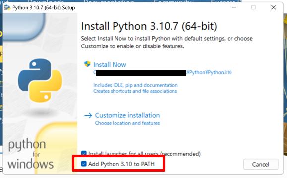
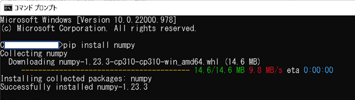

<<<使い方>>>
- 公式サイトからPythonをパソコンにインストールする。最新版なら多分大丈夫。インストール時、「Add Python 3.11 to PATH」に必ずチェックを入れる（デフォルトでは入っていない）！！

- IDLEを開く。Windowsなら画面左下のWindowsをクリックして「Python」か「IDLE」で検索。デスクトップかツールバーにもってきとくといい
- 白い正方形の画面が出てくる。Shellというらしい。>>>のところに「print("3+5=" + str(3+5))」と打ってみよう。「3+5=8」と出てくるはず。
- その画面の左上のFile -->Open... で出てくる画面に新しいフォルダを作る（右クリック-->新規作成-->フォルダー）。名前は適当
- フォルダ内に下の9ファイル（空）を作る。打つの面倒なのでコピペをうまく使おう:
＜注意＞「.txt」は拡張子です。拡張子が表示されないようになっているときは.txtの手前までをコピペ。
よくわからなければ.txtを含めた名前（ConstellationList.txtとか）のファイルを作って（右クリック-->新規作成-->テキストドキュメント-->名前変える）開いてみて、
左上に出てくるファイル名が「ConstellationList.txt」になってたらOK。「ConstellationList.txt.txt」になってたら拡張子を隠す設定になってるので、
.txtを除いた部分をファイル名のところにペースト。設定を変える必要はありません
- ConstellationList.txt
- ConstellationListENG.txt
- ConstellationPositionNew.txt
- Lines_light.txt
- StarsNewHIP_to6_5.txt
- boundary_light.txt
- 下のURLすべてにアクセスする。テキストファイル（.txtで終わるもの）は上で作ったファイルに中身をコピーする。行数が30万を超えるものもあるのでコピーはドラッグではなく
「すべて選択」(Ctrl + A + C)で。
StarsShow.pyはたぶん勝手にダウンロードされるので、上のフォルダ内に移す。
- プログラムを動かすのに必要なライブラリというものをインストールする。StarsShow.pyを（IDLEで）開くと最初にimportが並んでますね、そのmatplotlibとかがライブラリです。
たぶんここが難関。「Python ライブラリ インストール」とか調べてみるとやり方が分かると思う（以下でWindowsの場合を書く）。
おそらくインストール必要なのはmatplotlib、numpy、PILです
Windowsの場合:
- Windowsキーを押す
- 検索窓で「cmd」と検索
- コマンドプロンプトが開く
- 「pip install matplotlib」と入力、Enter
- 何かいろいろ出てきて勝手に終わる。最後にSuccessfully installedって書いてれば成功。ありませんみたいなエラーは、1.でチェックを忘れていたか、スペルミスか、インストール不要（mathとかはいらない）かだと思います。１つめなら面倒だけどPythonの再インストールをおすすめします。もし再インストールしてもだめだったら、もう１回再インストールしたら直るかも

- matplotlibの部分をnumpyやdatetimeに替えてほかもインストールする
- 画像作成.pyを、画面上のRun --> Run Module で実行してしばらく待つ。WindowsならF5でもできる。インストールしていないライブラリがあるとShellにmatplotlib is not foundのようなエラーが出るので、怖がらずにコマンドプロンプトでインストールする。
- 大量の画像ができていることを確認する。
- 星座クイズ.pyを8. と同じように実行する。難しいです。星座線なしの学名とか誰ができんねん。
ConstellationList(ENG).txtで用意してる答えとぴったり一致しないといけないので表記にも気を付けて（基本 ひらがな か カタカナ）。
答えが出ないときがあるのはごめんなさい。一応最後に振り返りできるようになってます